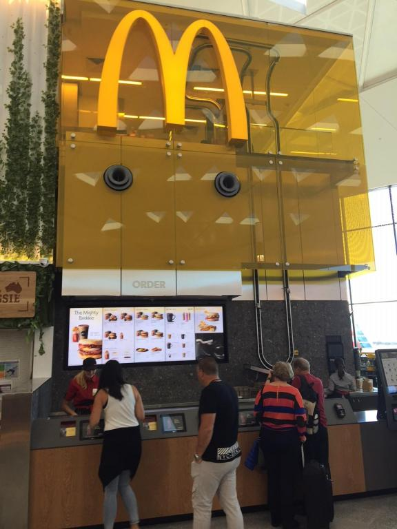

<section id="restaurant-swipe">
    
    
    
</section>
<section>
    <div id="overall-rating">
        <!-- Only full stars show based on review in component's TS file-->
        <span *ngFor="let star of rating">
            
            <ng-template #empty></ng-template>
        </span>
    </div>
    <div id="restaurant-info">
        <button routerLink="/reviews" routerLinkActive="active" mat-button>
            
        </button>
        <span id="details">
            <strong id=name>McDonalds</strong>
            <p>Terminal <span id=location>1</span></p>
            <p><span id="review-count">44</span> Reviews</p>
        </span>
        <button routerLink="/terminals" routerLinkActive="active" mat-button>
            
        </button>
    </div>
</section>